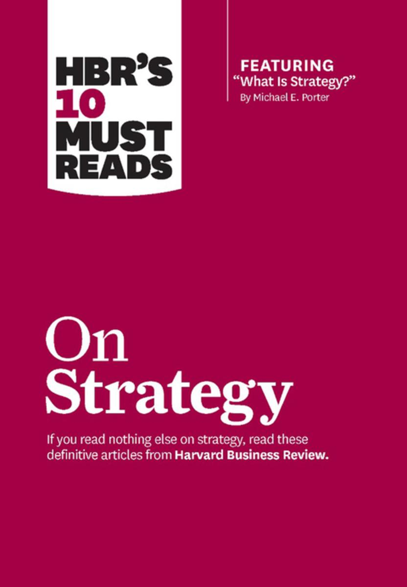

《战略十篇》的最后一篇书稿，来自于Paul Rogers和Marcia Blenko ，原文刊于《哈佛商业评论》2006年1月刊（链接）。
决策是任何商业形式最重要的活动，也是所有领导者的必要能力；决策的低效与失效直接伤害企业绩效和领导表现，相反，高效决策往往与高效企业和领导者强相关。
那么决策失败的根源来自何处？让我们回到企业的决策环境。
从外部来看，市场需求的快速变化弱化了完美逻辑和广泛数据对决策的效用，企业需要在调研不完备、准备不充分的情况下进行决策；
从内部来看，由外界环境驱动，现代企业逐步用边界模糊、更灵活的小群体关系取代分工明确的大部门关系，以实现高响应力，跨部门或跨职能的协作增多，职责变得模糊，同时，当职责模糊的执行者经常性思考「这是不是我该考虑的事情」时，这种模糊性将拖累决策效率。
为了换取更高的市场响应速度，现代管理者不得不思考：「如何既要模糊性（Ambiguity）带来的快速响应优势、又缩小其对决策效率的负面影响」这便是作者所阐述核心逻辑所期待解决的问题，即RAPID模型。
关键决策瓶颈
大部分公司的决策问题集中在以下场景，它们是：
- 全球还是本地？
- 集权还是放权？
- 跨功能协作；
- 自有还是外部能力？
此四场景的共同逻辑是：
- 明显由利益诉求（如总部诉求与在地业务诉求的区别）所产生的边界；
- 由边界产生的不同上下文；
- 不同上下文下无法统一定义的职责。
理解这些共同逻辑在四个场景中的意涵，帮助我们解决关键决策瓶颈。
全球或本地
全球或本地之争的本质是「要全球规模化机会、还是本地化高响应力的经营能力」：
- 过度关注本地业务带来全球资源浪费和丧失全球规模优势、却带来对本土市场的精耕细作；
- 相反，一味全球统一经营则丧失本地市场经营的主观能动性，无法适应本地市场的变化和增长。
追求效率和规模还是响应力和精细，永远需要领导者统筹考虑市场趋势、人才、成本、消费者需求、竞争等因素进行平衡。一旦战略方向确定（全球或本地），一个平衡的决策机制必定做到：
- 推动战略方向（全球或本地）；
- 保护平衡的另一端（本地或全球）。
例如面对奥驰亚集团（Altria）旗下万宝路品牌的强力进攻，英美烟草公司（British American Tobacco - BAT）前CEO以及主席Martin Broughton即希望公司保有对在原料采购方面获得规模优势，又能够激发各个市场独立创新能力。
这种名义上平衡背后，是失衡的问题：区域子公司运营的强独立，无法最大化利用其全球规模优势。因此，解决全球或本地决策失衡问题的第一步，是清楚认识失衡来自于全球还是本地。
英美烟草的执行策略是逐步建立横跨全球的统一决策机制，例如全球原料采购；同时保护各个区域的独立机制，例如规定高级管理者的职责是为区域内决策提供支持，而不是审查。
总而言之，全球或本地决策机制的建立，其要义在于：「恢复平衡」，而非用一种不平衡替代另一种不平衡。
集权或放权
集中或下放决策权是公司决策的永恒话题。在公司中小规模的成长初期，问题并不存在，较为简单的公司结构，催生出简单的决策机制——即围绕在创始人周围的集中式决策。
而当公司规模逐步扩大，过去的决策机制，无论是单人或者领导组都无法做出最优决策，决策被堆积，最终丧失市场机会。
与英美烟草公司不同，美国惠氏（Wyeth）所面临的是生物科技领域一个前所未有的机会——类风湿性关节炎特效药依那西普（Enbrel）的研制。惠氏需要迅速在该要获得FDA（美国食品和药物管理局）认证后迅速占领市场。
这一计划的重要部分是在爱尔兰修建全新的生产线，这将是世界上最大的生物技术生产基地也是惠氏至今最大的投资。对于如此复杂的计划，惠氏构建了一套高效的决策系统、把大量决策下放给多个业务部门、只把握某些核心领域的决策、同时不断对决策进行沟通与调整，从而最终交付了这一生产基地——在药品获得FDA认证后的第三天实现了大规模生产，并一举迅速占领了市场。
这一决策系统的要义并不在于集权或者放权，而在于在正确的时候、把正确的权利、给正确的人，并在不正确时提供修正的能力。
跨部门
部门身处不同上下文（目标、职能、考核标准、文化等），对于1）谁决策；2）为什么决策和决策什么，都有天然的不一致。在汽车行业，一份研究报告显示：
- 当问「谁来决定什么功能是标准」，64%的产品开发者说是他们，83%的市场部门人员说是他们；
- 当问「谁来决定到底推出什么颜色」，77%的产品开发者说是他们，61%的市场部门人员说是他们；
决策谁做的问题困扰着执行者，延期在所难免。同时，一个决策的制定，保证充分的前期沟通将难以推动决策落地、错过时机，于是关于决策的解释，部门之间有着天壤之别。
John Lewis是英国久负盛名的百货商店，公司曾作出一个「精选盐和胡椒面的决策」，即减少其盐和胡椒面的种类、选择畅销的产品销售。这个决策对于采购部门来说，意味着更简化的流程，决策推行之后，其盐和胡椒面的销售发生了下降。直到采购部门探访店面才发现其原因，向店面销售的销售部门并未将这一改变的目的传递给店面，导致店面自行减少了货架空间，而不是对精选的产品增加上架量。这一决策的沟通失误很快被修正，销售数据也得到快速恢复。
修正之一就是将「建议店面采用什么样销售策略」的权利赋予给销售部门，而不是由采购部门（或者任何谁）独立决定，销售部门有权利根据情况、与采购部门协商、帮助店面制定更符合需求的销售方式。
在这里，跨部门协作中决策永远不是「谁决定什么」的问题，而是「谁有权获得更多信息进行协商」的问题，这种协商机制是跨部门决策的要义。
自有或外包
任何一个大型组织都拥有大量外包的合作伙伴，每个合作伙伴通常拥有者甲方公司难以直接理解的竞争环境和不同的商业驱动，这使得企业决策变得更加复杂。
一家美国的户外用品品牌在中国拥有其户外燃气炉（Gas Patio Heater）的生产线，受到竞争的压力，该品牌急需压低产品的制造成本，在一开始中国的合作伙伴通过使用更廉价材料的方式降低成本，可大大降低了产品的使用体验。该品牌在意识到这个问题之后，一方面将影响用户体验的所有决策收回、另一方面下放所有其他控制成本的手段给中国的合作伙伴。
更加值得称道的是，该品牌并非一味将产品设计决策权完全收回，而是将一部分设计能力搬到中国，而中国的工程师一起研究和设计，最终，中国的合作伙伴在其他领域找到了节省成本的方式——即在包装方式上创新，使得一个标准集装箱货柜可多容纳15%的产品。
澳洲最大的房产信息公司REA在与ThoughtWorks位于西安的交付中心中也采用类似的策略，一方面REA将产品设计权完全收回，但采用轮换驻场的方式将产品经理、设计师送往西安和工程师团队一起工作；另一方面，在工程实践领域和业务创新领域，给予西安的交付团队足够的灵活度，过去近八年的合作里，从西安诞生了多个软件工程领域的技术创新、也诞生了像买房网和Spacely这样的商业创新。
在考虑管理合作伙伴的决策权时，其核心要义在于，划分明确的界限，但在属于自己的界限部分帮助合作伙伴一起实现共同价值；在合作伙伴的决策空间里，给予足够的支持和自由度。
写在最后
任何一个现代企业在面临决策时都面临极其复杂的外部环境和市场需求，对内决策的难度体现在如何平衡全球还是本地、全球还是本地、集权还是放权、各个部门、自有还是外包，其要义有如下四个部分：
- 在全球或本地决策中将解决失衡问题放在建立决策模型的首要目的；
- 不简单考虑集权或者放权，而考虑如何在正确的时候、把正确的权利、给正确的人，并在不正确时提供修正的能力。
- 在跨部门协作中建立协商机制，定义「谁有权获得更多信息进行协商」的问题；
- 在特定空间为合作伙伴提供足够的支持和自由度，但在属于自己的界限部分帮助合作伙伴一起实现共同价值。
最后的最后
本篇是HBR战略经典十篇书稿的最后一篇，从第一篇《何为战略》开始，已经整整三年。在这三年里，因为工作的关系，我接触了许多跨国企业的核心战略决策，特别深入到美国传统企业的经营中，为高层管理者提供战略咨询的服务，加上近两年对官僚系统、国家体系、和政治制度的学习，对于这十篇书稿又有了全新的认识。以下是这十篇书稿的完整目录，希望能对初识战略的你有帮助：

战略，终于敢称入门。